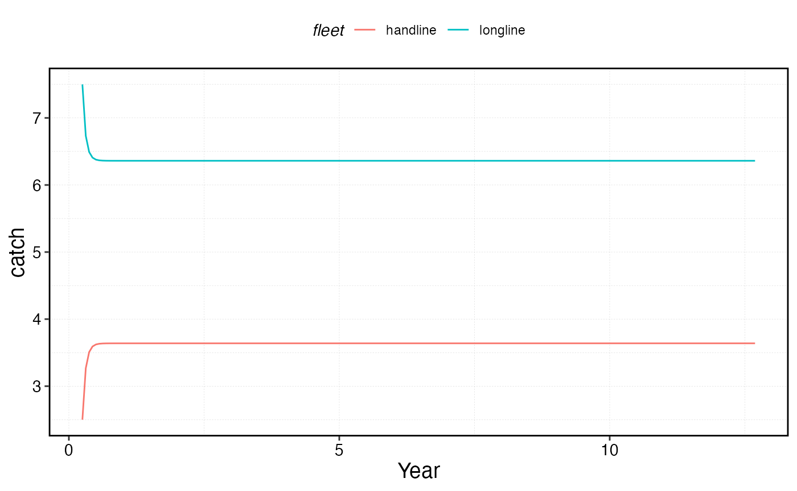
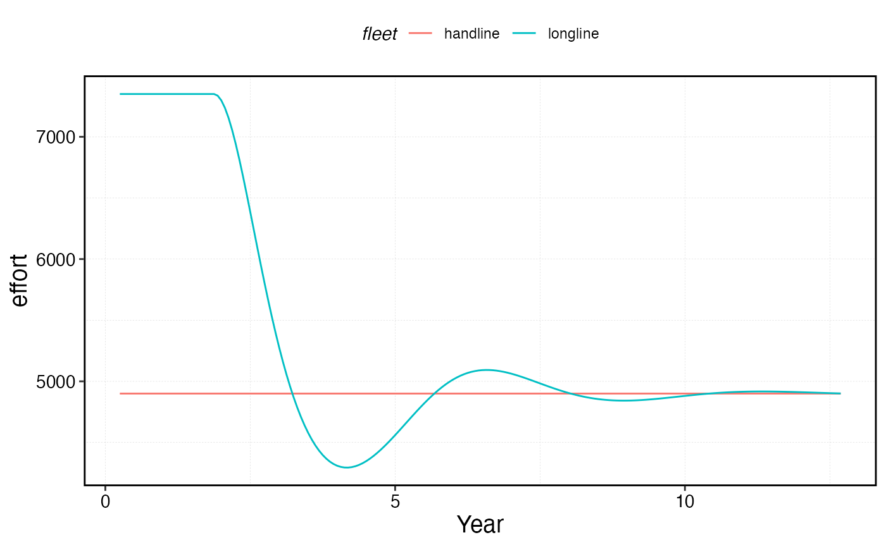

marlin allows for a wide range of options to govern both
the management and internal dynamics of fishing fleets.
Things you can adjust include
The
fleet_modeloption, which at the moment supportsconstant effort, in which total fishing effort remains constant, andopen accesswhere total effort increases or decreases in response to profits.Closed fishing seasons per critter, for example enforcing a closed season for species X but not species Y
Catch quotas per species
Effort caps per fleet
Size limits and selectivity forms per metier and critter
no-take Marine Protected Areas
You can mix and match most of these options (e.g. an open-access fleet subjected to a total quota for some species but not for others).
First, let’s set up the system and the critters we will deal with, in this case a simple example of one bigeye tuna population.
library(marlin)
library(tidyverse)
theme_set(theme_marlin(base_size = 14) + theme(legend.position = "top"))
resolution <- 10 # resolution is in squared patches, so 20 implies a 20X20 system, i.e. 400 patches
years <- 50
seasons <- 4
time_step <- 1 / seasons
steps <- years * seasons
fauna <-
list(
"bigeye" = create_critter(
scientific_name = "Thunnus obesus",
adult_diffusion = 10,
density_dependence = "post_dispersal",
seasons = seasons,
fished_depletion = 0.8,
resolution = resolution,
steepness = 0.6,
ssb0 = 1000
)
)
fauna$bigeye$m_at_age
#> [1] 3.6234693 2.4692787 1.8927609 1.5473114 1.3173955 1.1534981 1.0308614
#> [8] 0.9357311 0.8598546 0.7979800 0.7466060 0.7033087 0.6663565 0.6344796
#> [15] 0.6067255 0.5823660 0.5608345 0.5416836 0.5245555 0.5091604 0.4952612
#> [22] 0.4826621 0.4711996 0.4607368 0.4511574 0.4423625 0.4342675 0.4267990
#> [29] 0.4198938 0.4134967 0.4075592 0.4020388 0.3968982 0.3921040 0.3876268
#> [36] 0.3834400 0.3795203 0.3758463 0.3723991 0.3691613 0.3661175 0.3632535
#> [43] 0.3605564 0.3580146 0.3556173 0.3533547 0.3512180 0.3491988 0.3472895Open Access
Let’s set up two fleets, one open access, one constant effort. open access dynamics are based around the profitability of the fishery, and so require a few more parameters, though reasonable defaults are provided.
The open access fleet model is
where E is total effort in time t for fleet f. controls the responsiveness of effort to the ratio of revenues R to costs C in log space. A value of 0.1 means that a 1 unit increase in the revenue to cost ratio results in a roughly 10% increase in effort.
Revenue is defined as
where p is the price and Catch is the catch for species s caught by fleet f
Costs are defined as
where is the base cost per unit effort for fleet f, allows for thec cost of effort to scale non-linearly, and is the cost of fishing in each patch p, allowing for the model to account for travel costs for different patches.
Many of these parameters are intuitive and easy to set (e.g. price), but others are not. In particular, the cost per unit effort parameter can be difficult to adjust as it depends on the units of effort and biomass to work correctly.
As such, the model works bets when specifying a cr_ratio
rather than a
.
The cr_ratio specifies the ratio of costs to revenue at
equilibrium conditions. So, a value of 1 means that profits are zero at
equilibrium, >1 that profits are negative, < 1 that profits are
positive.
The function tune_fleets then takes these parameters and
finds the cost parameters that results in the desired equilibrium
cr_ratio.
fleets <- list(
"longline" = create_fleet(
list("bigeye" = Metier$new(
critter = fauna$bigeye,
price = 10,
sel_form = "logistic",
sel_start = 1,
sel_delta = .01,
catchability = 0,
p_explt = 2
)
),
base_effort = resolution ^ 2,
resolution = resolution,
responsiveness = .5,
cr_ratio = 1,
cost_per_distance = 1,
fleet_model = "open access")
,
"handline" = create_fleet(
list("bigeye" = Metier$new(
critter = fauna$bigeye,
price = 10,
sel_form = "logistic",
sel_start = 1,
sel_delta = .01,
catchability = 0,
p_explt = 1
)
),
base_effort = resolution ^ 2,
resolution = resolution,
fleet_model = "constant effort",
cost_per_unit_effort = 2
))
fleets <- tune_fleets(fauna, fleets, tune_type = "depletion") We can now run our simulation and examine the resulting fleet dynamics
sim <- simmar(fauna = fauna,
fleets = fleets,
years = years)
proc_sim <- process_marlin(sim)
plot_marlin(proc_sim)
proc_sim$fleets %>%
group_by(step, fleet) %>%
summarise(effort = sum(effort)) %>%
ggplot(aes(step * time_step, effort, color = fleet)) +
geom_line() +
scale_x_continuous(name = "Year")
Open Access and MPAs
To see the effect of the fleet model choices, let’s examine the trajectory of each fleet after the addition of an MPA. Under the default constant effort with reallocation dynamics of the model, when an MPA is put in place, the total effort in the fishery remains the same but is reallocated to from inside the MPA to the remaining fishable patches. Under the open access model, effort reacts to the MPA in accordance to the MPAs impacts on fishing profits.
As a result, when the MPA is put in place effort decreases rapidly, until profits increase some due to spillover from the MPA, at which time effort increases until a new open access equilibrium of zero profits with the MPAs is achieved.
set.seed(42)
#specify some MPA locations
mpa_locations <- expand_grid(x = 1:resolution, y = 1:resolution) %>%
mutate(mpa = x > 4 & y < 6)
with_mpa <- simmar(fauna = fauna,
fleets = fleets,
years = years,
manager = list(mpas = list(locations = mpa_locations,
mpa_year = floor(years * .5))))
proc_mpa_sim <- process_marlin(with_mpa)
proc_mpa_sim$fleets %>%
group_by(step, fleet) %>%
summarise(effort = sum(effort)) %>%
ggplot(aes(step * time_step, effort, color = fleet)) +
geom_line() +
scale_x_continuous(name = "year")
Quotas
We can also layer quotas onto the fleet model. Here, we will impose a total quota of 100 tons of bigeye caught across all fleets. Notice that quotas impose a cap, not a requirement, on catch. So, in the early days of the fishery when catches would have been high, the quota is in effect. However, in the later days of the fishery, the fleets have no incentive to catch up to the quota, and so catch less than the allowable amount.
sim_quota <- simmar(fauna = fauna,
fleets = fleets,
years = years,
manager = list(quotas = list(bigeye = 10)))
proc_sim_quota <- process_marlin(sim_quota)
plot_marlin(proc_sim_quota, plot_var = "c", max_scale = FALSE)
proc_sim_quota$fleets %>%
group_by(step, fleet) %>%
summarise(catch = sum(catch)) %>%
ggplot(aes(step * time_step, catch, color = fleet)) +
geom_line()+
scale_x_continuous(name = "Year")
proc_sim_quota$fleets %>%
group_by(step, fleet) %>%
summarise(effort = sum(effort)) %>%
ggplot(aes(step * time_step, effort, color = fleet)) +
geom_line() +
scale_x_continuous(name = "Year")
Effort Caps
Another management option is to set a maximum amount of effort per fleet. This could reflect regulation, or reality. For example, if the user wishes to think of effort in terms of “days fished per year” by a fixed number of vessels, clearly there are limits.
Users set this by
manager = list(effort_cap = list(FLEET_NAME = EFFORT_CAP)),
where FLEET_NAME is filled in with the name of the fleet to
apply a given total EFFORT_CAP to.
Note that effort caps only really apply when
fleet_model == "open access; when
fleet_model == "constant effort" effort it already capped.
Under open access though, the effort cap ensures that while open access
dynamics might reduce the total amount of effort,
effort will never expand beyond the supplied cap for that fleet.
sim_effort <- simmar(fauna = fauna,
fleets = fleets,
years = years,
manager = list(effort_cap = list(longline = 1.5 *fleets$longline$base_effort)))
proc_sim_effort <- process_marlin(sim_effort)
plot_marlin(proc_sim_effort, plot_var = "c", max_scale = FALSE)
proc_sim_effort$fleets %>%
group_by(step, fleet) %>%
summarise(catch = sum(catch)) %>%
ggplot(aes(step * time_step, catch, color = fleet)) +
geom_line()+
scale_x_continuous(name = "Year")
proc_sim_effort$fleets %>%
group_by(step, fleet) %>%
summarise(effort = sum(effort)) %>%
ggplot(aes(step * time_step, effort, color = fleet)) +
geom_line() +
scale_x_continuous(name = "Year")